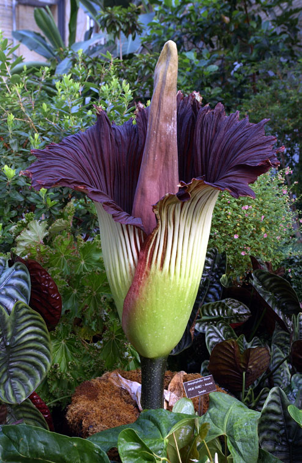

Аморфофаллус титанический (Amorphophallus titanum) — крупное тропическое растение; вид рода Аморфофаллус семейства Ароидные. Один из самых известных видов рода, имеет одно из крупнейших соцветий в мире.
Открыт в 1878 году на Западной Суматре ботаником Одоардо Беккари.
Надземная часть представляет собой короткий и толстый стебель, в основании расположен одиночный крупный лист[2], выше — более мелкие. Подземная часть растения — гигантский клубень массой до 50 кг
Лист длиной до 3 м, до 1 м в диаметре, трёхраздельный, вилковидно-перистый. Длина черешка 2-5 м, толщина 10 см. Матово-зелёный, с белыми поперечными полосами.
Соцветие — жёлтый початок, обернутый листовидным придатком и скрученным покрывалом, внутренняя поверхность которого окрашена в бордовый цвет, наружная — в зелёный. Цветение аморфофаллуса титанического длится всего два дня[4]. Аромат цветка напоминает смесь запахов тухлых яиц и тухлой рыбы, а по внешнему виду цветок напоминает разлагающийся кусок мяса[4].
Изначально аморфофаллус титанический рос только в лесах индонезийского острова Суматра, однако пришедшие туда люди практически истребили его. Сейчас этот редкий цветок разводится в основном в тепличных условиях в ботанических садах мира[4].
В странах Индокитая растения рода Аморфофаллус выращиваются как культурное растение. Клубни используются в пищу.